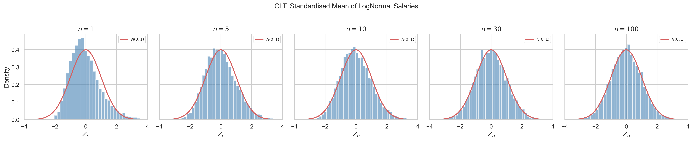
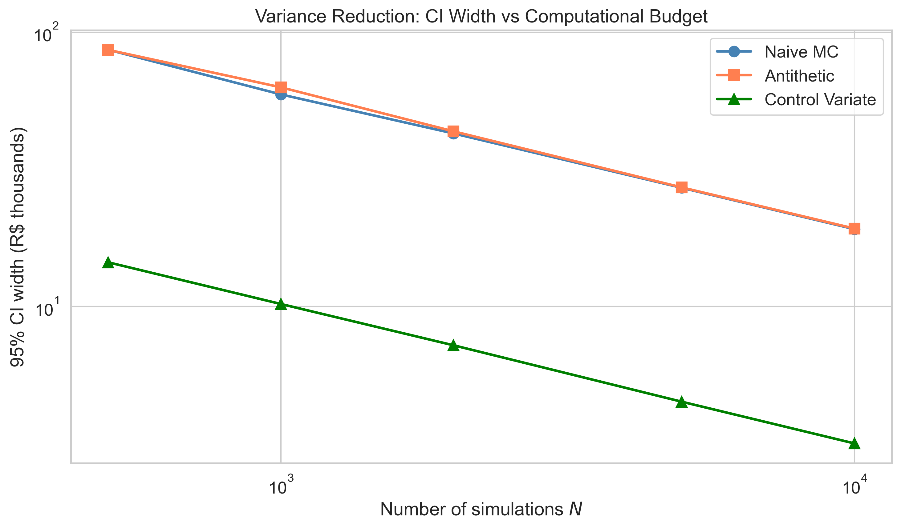
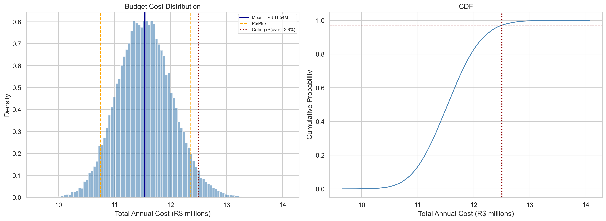
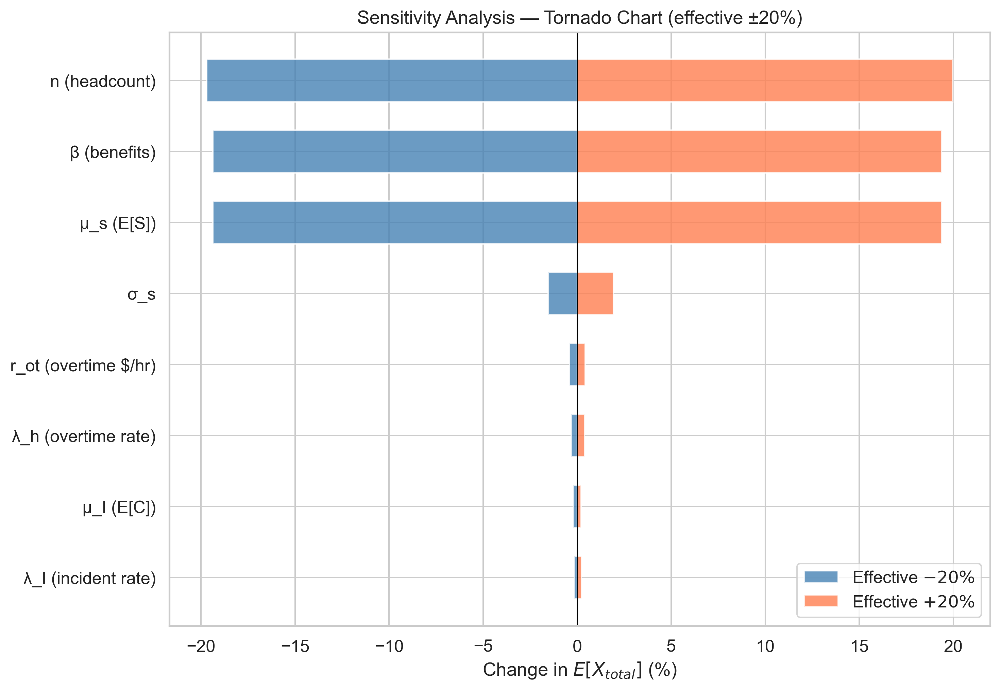

Why Your Budget Never Hits the Exact Number
What this is. The mathematical machinery to replace a single budget number with a probability distribution: "we expect to spend R\$ 11.5M" becomes "we are 90% confident spending will fall between R\$ 10.7M and R\$ 12.4M, with a 3% probability of exceeding the ceiling." The approach applies to any budget that decomposes into stochastic components — headcount, projects, procurement, infrastructure; an IT headcount budget is the running case study.
What you should know before reading. Required: basic calculus (derivatives, integrals, a Taylor expansion) and basic probability (random variables, PDF/PMF, CDF, expectation, variance). Helpful but not required: prior exposure to the Law of Large Numbers, the Central Limit Theorem, and confidence intervals — all derived from first principles here — and working knowledge of NumPy. Out of scope: how to choose distributions for heavy-tailed data — that is the companion article The Shape of What You'll Spend — plus Bayesian inference beyond a conceptual example, real-world data quality issues, and time-series forecasting.
What you will take away. A working Monte Carlo budget you can build in a day, the proofs that justify trusting it, and the language to present a distribution to leadership as a reserve policy (P90 / P95 / P99) instead of a target.
Code. Every figure and number is reproduced by versioned scripts with fixed seeds in the companion repository.
Notation
| Symbol | Meaning |
|---|---|
| $X_{\text{total}}$ | Total budget cost (random variable) |
| $X_k$ | Cost of component $k$ |
| $n$ | Number of units (headcount, items, etc.) |
| $\bar{X}_N$ | Sample mean of $N$ simulations |
| $\hat{\theta}_N$ | Monte Carlo estimator |
| $\sigma$ | Standard deviation of the cost distribution |
| $z_{\alpha/2}$ | Normal quantile for confidence level $1-\alpha$ |
Case study notation (IT headcount):
| Symbol | Meaning |
|---|---|
| $S_i$ | Monthly salary of employee $i$ |
| $\beta$ | Benefits multiplier |
| $H_i$ | Overtime hours per employee per month |
| $r_{ot}$ | Overtime hourly rate |
| $I$ | Number of severe incidents per year |
| $C_j$ | Cost of incident $j$ |
Introduction
Someone asks for next year's budget. You open a spreadsheet, multiply quantities by unit costs, add contingencies, round up a little — and deliver a number. A single number.
But what if that number is just one sample from a distribution you have never seen?
Every organisation that manages budgets — headcount costs, project expenses, procurement, marketing spend — faces the same ritual. The team produces a point estimate, leadership approves it, and the year unfolds. Months later, during a periodic forecast review, the actual spending deviates. The team adjusts. Another review. Another adjustment. By year-end, the original number looks like little more than an educated guess.
The Hidden Cost of a Point Estimate
The problem is not that the estimate was wrong. The problem is that a single number carries no information about its own uncertainty — and that ignorance has a price.
- Capital is locked up as fat. Without knowing the distribution, the prudent move is to over-reserve. Every extra million held against an imagined worst case is a million that cannot fund hiring, a project, or a customer initiative. This is the opportunity cost of variance you cannot see.
- Plans break under shocks you did not budget for. Under-reserving is the symmetric failure: a project halts mid-year because the contingency was set to "the average outcome plus 10%", and the actual outcome lived in the right tail of a distribution nobody modelled. The point estimate gave no warning because it did not describe a tail.
- Forecast revisions look like mistakes. Every monthly variance against a deterministic budget is read as "a miss". With a distribution, the same variance is read as "we were inside the 80% interval, no action needed" — or "we crossed the 95% line, escalate." The same data, a different decision.
A point estimate gives you a number. A distribution gives you the policy: how much to reserve, when to escalate, and how confident to be at every step.
What Changes With a Distribution
This article replaces the single number with a probability distribution. Using Monte Carlo simulation grounded in the Law of Large Numbers and the Central Limit Theorem, we transform "we expect to spend R\$ 11.5M" into "we are 90% confident spending will fall between R\$ 10.7M and R\$ 12.4M, with a 3% probability of exceeding the ceiling."
A budget is a distribution, not a number. This single shift changes how budgets are approved, not just how they are calculated. The output is no longer a target — it is a risk profile that a CFO can underwrite.
The approach is general: it applies to any budget that can be decomposed into stochastic components — headcount, projects, procurement, licensing, infrastructure. We illustrate with an IT headcount budget (salaries, benefits, overtime, incidents) as a concrete case study, but the mathematical framework transfers directly to any domain.
The journey proceeds in stages: we formalise budget components as random variables, prove that averaging simulations converges to the true answer with the Law of Large Numbers, quantify the simulation error with the Central Limit Theorem, and make the estimator efficient with variance reduction. The experiments validate everything; the practical framework turns the math into a decision workflow you can hand to a budget owner on Monday morning.
The Point Estimate Problem
A point estimate is a single value used to approximate an unknown parameter. In budget planning, it takes the form:
$$ \hat{X} = \sum_{k} (\text{quantity}_k \times \text{unit cost}_k) + \text{contingency} $$
The result is a number — say, R\$ 11.5 million. But this number is $E[X_{\text{total}}]$: the expected value of a random variable. It tells us the centre of the distribution. What it discards is everything else:
- Variance: How spread out are the possible outcomes?
- Skewness: Is the distribution symmetric, or could costs be pulled higher by a few extreme events?
- Tail risk: What is the probability of exceeding the approved ceiling?
- Confidence: How sure are we that the true cost is within ±5% of our estimate?
In formal terms, the point estimate gives us $E[X]$ but not the distribution $F_X$. Monte Carlo simulation recovers $F_X$ — the full picture.
What the Spreadsheet Is Really Doing
The point estimate is not a missing model. It is a model with hidden assumptions. To make the critique concrete, here is what a typical FP&A spreadsheet computes:
Box: Typical FP&A model
- Best estimate: $\hat{X} = \sum_k (\text{quantity}_k \times \text{unit cost}_k)$
- Contingency: $\hat{X}_{\text{budget}} = \hat{X} \times (1 + c)$ for some chosen $c$ (often 5–15%)
- Optimistic / pessimistic scenarios: $\hat{X} \times 0.9$ and $\hat{X} \times 1.1$, picked by feel
What this implicitly assumes:
- The output is a constant (no distribution).
- When pressed, the contingency $c$ is a one-sided "buffer for uncertainty" — but how much risk does it actually cover? The spreadsheet does not say.
- The optimistic/pessimistic scenarios trace out a range, but with no probability attached. Are they 5th and 95th percentiles? 1st and 99th? The spreadsheet does not say.
If you are asked "what is the chance we exceed budget by more than 10%?", a deterministic spreadsheet has no answer — only a guess. Monte Carlo does.
The contingency factor is not the problem. The problem is that the spreadsheet had to make a distributional assumption, did so silently, and then refused to tell you which one. Monte Carlo makes the distribution explicit, calibrated, and falsifiable. Before we can simulate from $F_X$, however, we first have to write it down — declaring which budget components are random and which distributions describe them. That is what the next section does.
The General Pattern
Any budget with uncertain components can be written as:
$$ X_{\text{total}} = \sum_{k=1}^{K} g_k(\mathbf{Z}_k) $$
where $g_k$ is a cost function for component $k$ and $\mathbf{Z}_k$ is a vector of random inputs. The point estimate collapses each $g_k$ to its expected value; Monte Carlo preserves the full joint distribution.
Budget Components as Random Variables
Every component of a budget is potentially a random variable. Treating them as constants is a modelling choice that discards information. The key insight: identify which components carry meaningful uncertainty, model them probabilistically, and keep the rest deterministic.
Mental model: if you cannot point to last year's actual value and say "we hit it exactly", that component is random. Model it.
The General Structure
A stochastic budget model has three types of components:
- Proportional costs: quantity × rate, where either or both may be random
- Fixed costs with uncertainty: known structure but uncertain magnitude
- Rare events: random count of occurrences × random cost per event (compound process)
$$ X_{\text{total}} = \underbrace{\sum_{i=1}^{n} f(Z_i)}_{\text{proportional}} + \underbrace{\text{fixed components}}_{\text{deterministic or low-variance}} + \underbrace{\sum_{j=1}^{N_{\text{events}}} C_j}_{\text{rare events}} $$
Operational Decision Table
The hardest practical question is which components to model as random. The table below is the working tool — fill in one row per budget component and apply the rule of thumb.
| Component | Random? | Distribution | Why |
|---|---|---|---|
| Salary per employee | Yes | LogNormal | Strictly positive, right-skewed by seniority |
| Headcount | Sometimes | Poisson (if hiring/attrition modelled) | Often deterministic in v1; expand later |
| Benefits multiplier | No | Constant | Negotiated annually, low variance |
| Overtime hours | Yes | Poisson | Discrete count of independent events |
| Incident count | Yes | Poisson | Rare events with constant rate |
| Incident cost | Yes | LogNormal | Heavy right tail (a few large incidents) |
| FX rate (if applicable) | Yes | Normal or empirical | Symmetric around forward rate |
Rule of thumb: model a component as random if it satisfies either of these:
- The coefficient of variation $\text{CV} = \sigma / \mu \gt 10\%$ for that component.
- It contributes more than ~5% of the total budget in absolute terms — even at low CV, a large share with even modest noise dominates the tail.
Components below both thresholds can be left deterministic in v1 with negligible loss.
In our case study, salaries and incident costs clear the bar comfortably; the benefits multiplier does not. Overtime sits in between — Poisson with $\lambda_h = 5$ has $\text{CV} = 1/\sqrt{5} \approx 45\%$, but its share of the budget is small (~2%), so the contribution to the total CV is modest.
A Note on Correlation
The compact form above assumes the components are mutually independent — and inside each component, the units are i.i.d. That is rarely strictly true, and worth flagging:
- Salaries and overtime may be negatively correlated — senior employees command higher salary but may log fewer overtime hours.
- Incident frequency and severity may be positively correlated — a chaotic month with many incidents is also a month where each one is harder to contain.
- Macro factors propagate — inflation lifts salaries, FX, and contract costs together.
This article assumes independence to keep the math tractable and the case study clean. The cost is that the simulated CIs may slightly underestimate real variance when ignored correlations are positive, and overestimate it when they are negative. Two ways to handle this in practice:
- Joint distributions / copulas — the formal answer; use a Gaussian copula to specify pairwise correlations on top of marginal distributions.
- Sensitivity check — re-run the simulation with the strongest plausible correlation enforced and observe whether the P95 moves materially. If it does, model the correlation. If not, ignore it.
For a v1 budget, default to independence and flag correlation as a v2 expansion. For a regulated or mission-critical setting, model correlation from the start.
Case Study: IT Headcount Budget
We instantiate this structure with a concrete example — a 50-person IT team:
Salaries (LogNormal). Salaries are strictly positive and right-skewed (a few senior roles earn significantly more). The LogNormal captures this:
$$ S_i \sim \text{LogNormal}(\mu_s, \sigma_s^2), \quad \mu_s = 9.2, \; \sigma_s = 0.3 $$
$$ E[S_i] = e^{\mu_s + \sigma_s^2/2} = e^{9.245} \approx R\$ \, 10{,}362 $$
Overtime (Poisson). Hours are discrete, non-negative, and relatively rare:
$$ H_i \sim \text{Poisson}(\lambda_h), \quad \lambda_h = 5 $$
Incidents (Compound Poisson). Severe events occur at a random rate with random severity:
$$ I \sim \text{Poisson}(\lambda_I), \quad C_j \sim \text{LogNormal}(\mu_I, \sigma_I^2) $$
Total cost:
$$ X_{\text{total}} = \underbrace{\sum_{i=1}^{n} S_i \cdot \beta \cdot 12}_{\text{salaries + benefits}} + \underbrace{\sum_{i=1}^{n} H_i \cdot r_{ot} \cdot 12}_{\text{overtime}} + \underbrace{\sum_{j=1}^{I} C_j}_{\text{incidents}} $$
Using linearity of expectation:
$$ E[X_{\text{total}}] \approx 11{,}191{,}000 + 240{,}000 + 123{,}500 \approx R\$ \, 11{,}554{,}500 $$
The salary component dominates at ~97%. This pattern — one component driving most of the variance — is common across budget types and will matter for variance reduction.
Other Instantiations
The same structure applies to:
| Budget Type | Proportional | Fixed | Rare Events |
|---|---|---|---|
| IT Headcount | Salaries × headcount | Benefits rate | Incidents |
| Cloud Infrastructure | Usage × unit price | Reserved instances | Outage remediation |
| Marketing | Impressions × CPC | Platform fees | Campaign failures |
| Construction | Materials × quantity | Permits, insurance | Weather delays, rework |
| R&D Projects | Hours × rate × team size | Equipment | Scope changes |
In each case: identify the random components, choose distributions, and simulate.
A short caveat before moving on. Everything that follows assumes the distributions chosen for each component are correct. Monte Carlo will faithfully simulate from whatever you feed it — including a bad model. A LogNormal salary fit to data that is actually heavy-tailed will produce a CI that looks tight and is wrong. The companion article The Shape of What You'll Spend treats this question directly — how to pick a distribution from data, when to suspect a heavier tail than your eye says, and what happens to risk estimates when you get it wrong. If you only have time to read one, read this one first; the companion is what stops you from being precisely wrong.
With the model defined, the next two sections answer the two questions any practitioner asks before trusting a simulation: will the average converge? (the Law of Large Numbers) and how confident can I be after $N$ runs? (the Central Limit Theorem).
The Law of Large Numbers
If we simulate the budget 10,000 times and average the results, will the average converge to the true $E[X_{\text{total}}]$? The Law of Large Numbers says yes.
Chebyshev's Inequality
For any random variable $X$ with mean $\mu$ and variance $\sigma^2$:
$$ P(|X - \mu| \geq \epsilon) \leq \frac{\sigma^2}{\epsilon^2} $$
This is derived from Markov's inequality applied to $(X - \mu)^2$.
The Weak Law of Large Numbers
Let $X_1, \ldots, X_N$ be i.i.d. with mean $\mu$ and variance $\sigma^2$. The sample mean $\bar{X}_N = \frac{1}{N}\sum X_i$ satisfies:
$$ P(|\bar{X}_N - \mu| \geq \epsilon) \leq \frac{\sigma^2}{N\epsilon^2} \to 0 \quad \text{as } N \to \infty $$
Proof. Since $E[\bar{X}_N] = \mu$ and $\text{Var}(\bar{X}_N) = \sigma^2/N$, applying Chebyshev to $\bar{X}_N$ gives the result immediately. $\blacksquare$
The Strong Law provides an even stronger guarantee: $\bar{X}_N \to \mu$ almost surely (probability 1).
For Monte Carlo: each simulation $X_i$ is one "possible year." The LLN guarantees that averaging $N$ simulated scenarios converges to the true expected cost.
![Ten independent runs of the sample mean converging to E[X], with the Chebyshev 95% confidence band.](../figures/lln_convergence.png)
The LLN guarantees we get the right answer eventually. It does not tell us how close we are after, say, $N = 1{,}000$ runs — Chebyshev's bound is a worst case across all distributions, not a sharp estimate. To answer "how confident can I be?" we need the shape of the error, not just its decay. That is what the Central Limit Theorem provides.
The Central Limit Theorem
The LLN tells us the estimate converges. The CLT tells us how fast — and gives us confidence intervals.
TL;DR (skip the proof if you are not auditing the math)
- What it says: the average of many independent simulations becomes approximately Normal as $N$ grows, regardless of the underlying distribution. Right-skewed costs in, bell curve out.
- What it gives you: a confidence interval $\bar{X}_N \pm z_{\alpha/2} \cdot s / \sqrt{N}$. With $z_{0.025} = 1.96$, that is the standard 95% CI.
- What it costs you: $N$ scales as $1/\epsilon^2$. To halve the CI half-width, run 4× more simulations.
The proof below shows why this works via moment generating functions. The conclusion stands either way.
Statement
For i.i.d. variables with mean $\mu$ and variance $\sigma^2$:
$$ \frac{\sqrt{N}(\bar{X}_N - \mu)}{\sigma} \xrightarrow{d} N(0, 1) $$
Proof Sketch (MGF Approach)
Define $W_i = (X_i - \mu)/\sigma$ so that $E[W_i] = 0$ and $\text{Var}(W_i) = 1$. The standardised sum is $Z_N = \frac{1}{\sqrt{N}}\sum W_i$. Its MGF is:
$$ M_{Z_N}(t) = \left[M_W\left(\frac{t}{\sqrt{N}}\right)\right]^N $$
Taylor expanding $\log M_W(s) = s^2/2 + O(s^3)$ and substituting $s = t/\sqrt{N}$:
$$ \log M_{Z_N}(t) = \frac{t^2}{2} + O\left(\frac{t^3}{\sqrt{N}}\right) \to \frac{t^2}{2} $$
Since $e^{t^2/2}$ is the MGF of $N(0, 1)$, uniqueness gives $Z_N \xrightarrow{d} N(0, 1)$. $\blacksquare$
Confidence Intervals
From the CLT, the $(1-\alpha)$ confidence interval for $\mu$ is:
$$ \bar{X}_N \pm z_{\alpha/2} \cdot \frac{s_N}{\sqrt{N}} $$
Choosing N
To achieve a CI half-width of $\epsilon$:
$$ N \geq \left(\frac{z_{\alpha/2} \cdot \sigma}{\epsilon}\right)^2 $$
For our case study ($\sigma \approx 493K$, $\epsilon = 100K$, 95%): $N \geq 94$. Remarkably few simulations are needed.

With the LLN giving convergence and the CLT giving the error rate, the Monte Carlo estimator is fully specified. We can now state its formal properties.
The Monte Carlo Estimator
Definition
The Monte Carlo estimator of $\theta = E[g(X)]$ is:
$$ \hat{\theta}_N = \frac{1}{N} \sum_{i=1}^N g(X_i) $$
where each $g(X_i)$ is the total cost from one simulated scenario.
Properties
Unbiasedness. $E[\hat{\theta}_N] = \theta$. No systematic bias.
Consistency. $\hat{\theta}_N \xrightarrow{P} \theta$ (WLLN). More simulations → more accuracy.
Asymptotic normality. $\sqrt{N}(\hat{\theta}_N - \theta)/\sigma_g \xrightarrow{d} N(0, 1)$ (CLT). We can build CIs.
Convergence rate. $\text{SE} = \sigma_g / \sqrt{N}$, decaying as $O(1/\sqrt{N})$. This rate is independent of the dimension of $X$ — the key advantage over deterministic methods.
The Scaling Law
Halving the CI width requires 4× more simulations. This fundamental trade-off motivates variance reduction.
Mental model: precision is not free. You buy it with simulations — and the price doubles every time you halve the error bar.
Mean Squared Error
Since the estimator is unbiased: $\text{MSE}(\hat{\theta}_N) = \sigma_g^2 / N$.
The estimator is unbiased, consistent, and asymptotically Normal — everything the theory can promise. What the theory cannot promise is that the model being simulated is right; Limitations catalogues the ways that assumption fails in practice. Before that, there is a performance ceiling to break: the $O(1/\sqrt{N})$ rate is harsh — every halving of the CI requires quadrupling the simulations, and at the precision needed for serious budget decisions that gets expensive fast. The next section shows how to break that ceiling without changing $N$.
Variance Reduction
The $O(1/\sqrt{N})$ rate means brute-force precision is expensive. Variance reduction techniques achieve tighter confidence intervals for the same computational budget.
Control Variates
If we know $E[h(X)]$ analytically for some function $h$ correlated with the cost function $g$:
$$ \hat{\theta}_{CV} = \hat{\theta}_N - c^*\left(\bar{h}_N - E[h(X)]\right) $$
The optimal coefficient:
$$ c^* = \frac{\text{Cov}(g(X), h(X))}{\text{Var}(h(X))} $$
At optimal $c^*$, variance becomes:
$$ \text{Var}(\hat{\theta}_{CV}) = \frac{\text{Var}(g(X))}{N}(1 - \rho_{g,h}^2) $$
In our case study: using total raw salaries as control ($\rho \approx 0.99$) gives roughly a 30× variance reduction — equivalently, a 5–6× tightening of the 95% CI half-width at any given $N$. In any budget, the dominant cost component with a known analytical mean is the natural control variate.
Antithetic Variates
Generate pairs $(X_i, X_i')$ where $X_i'$ is the "mirror" of $X_i$. If $g$ is monotone, the pair averages have lower variance:
$$ \text{Var}(\hat{\theta}_{AV}) = \frac{1}{N}[\text{Var}(g(X)) + \text{Cov}(g(X), g(X'))] $$
When $\text{Cov} < 0$ (monotone $g$), variance is reduced.
Stratified Sampling
Partition the input space into $K$ strata and sample within each. By the law of total variance:
$$ \text{Var}(\hat{\theta}_{SS}) \leq \text{Var}(\hat{\theta}_{MC}) $$
Always. Stratification removes between-strata variance.

Why This Matters Beyond the Math: Compute ROI
A 30× variance reduction sounds like a mathematical curiosity. It is a compute and response-time result.
Suppose the naive simulation needs $N = 30{,}000$ runs to deliver a ±R\$ 50K confidence interval. With control variates, the same precision lands at $N = 1{,}000$. Translating into engineering reality:
| Aspect | Naive MC | With Control Variates | Practical Implication |
|---|---|---|---|
| Runs to ±R\$ 50K CI | 30,000 | 1,000 | 30× fewer scenarios |
| Wall-clock on a laptop | ~18 s | ~0.6 s | Real-time interactive update |
| Cloud cost per refresh | ~30 vCPU-seconds | ~1 vCPU-second | Negligible per query |
| Suitable for dashboard | No (too slow) | Yes | A CFO can rerun during a board meeting |
The ROI is not the variance number; it is what the variance number enables:
- Live dashboards. A CFO sliding a headcount parameter and watching the P95 update in milliseconds is a different product from one that takes a coffee break to recompute.
- Sensitivity at scale. The sensitivity analysis in the experiments runs the simulation many times, once per parameter variation. Cutting each run by 50× turns an overnight batch into a few-second screen.
- Cheap A/B of model assumptions. Want to compare LogNormal vs Gamma for salaries? Naive MC makes that a meeting; control variates make it a parameter toggle.
The math justifies the technique. The compute economics is what gets it shipped.
So far, the simulation is built once, before the year starts — a static distribution that anchors a one-shot decision. But budgets are not one-shot artefacts; they are revisited every month as real spending data arrives. The next section reframes the same machinery as the first version of a budget that gets updated continuously — a Bayesian extension that turns the one-shot script into a living forecast.
Continuous Budget Updating
Everything so far built the first version of the budget: a probability distribution computed before the year starts, from a fixed model. The previous sections made that estimate convergent, calibrated, and efficient.
But a budget is not a one-shot artefact. Each month produces actual spending data. Each quarter brings forecast revisions. The static distribution from January is not the right belief in July — by then we have evidence.
The natural next step is to let the data update the distribution. This is the Bayesian view of the same machinery, and it turns the budget from a one-time calculation into a living model.
From Frequentist Estimate to Bayesian Update
Bayes' theorem is the mechanism:
$$ P(\theta \mid \text{data}) \propto P(\text{data} \mid \theta) \cdot P(\theta) $$
Read in budget terms:
- Prior $P(\theta)$ — the distribution from January. The output of the full simulation in Experiments and Results, re-cast as a belief about the world.
- Likelihood $P(\text{data} \mid \theta)$ — how plausible the spending observed so far is, under each candidate value of $\theta$.
- Posterior $P(\theta \mid \text{data})$ — the updated distribution after the data arrives. This becomes the prior for the next month.
Each forecast review is, in practice, an informal Bayesian update. The maturity gain is making it formal — so the update is auditable, the uncertainty shrinks coherently with evidence, and the policy ("escalate if we cross P95") survives across revisions instead of being re-debated each cycle.
A Concrete Update Example
Model the team's average monthly salary cost as $\theta$. The January Monte Carlo gives a prior $\theta \sim N(\mu_0, \tau_0^2)$ — say, $\mu_0 = R\$ 11.55M$ with $\tau_0 = R\$ 500K$. After three months of observed monthly costs $x_1, x_2, x_3$ with sample variance $\sigma^2$, the posterior is:
$$ \theta \mid x_1, x_2, x_3 \sim N\!\left(\frac{\tau_0^{-2} \mu_0 + 3\sigma^{-2} \bar{x}}{\tau_0^{-2} + 3\sigma^{-2}}, \; \frac{1}{\tau_0^{-2} + 3\sigma^{-2}}\right) $$
The posterior mean is a precision-weighted average of the prior mean and the data mean. The posterior variance shrinks — the more months observed, the tighter the belief.
By month 6, the posterior is much narrower than the original prior. By month 12, the year is over and the posterior collapses around the realised cost. The trajectory of posteriors is the forecast.
Static Simulation vs Bayesian Updating: When Each Fits
| Aspect | Static simulation (this article's core) | Bayesian update layer (this section) |
|---|---|---|
| Parameters | Fixed constants of the model | Random variables with their own distributions |
| Prior information | Encoded implicitly in distribution choice | Explicit, auditable, can incorporate history |
| Output | Confidence interval | Credible interval (direct probability of $\theta$) |
| Mid-period updating | Re-run simulation from scratch | Natural: posterior of month $m$ becomes prior of $m+1$ |
| Best when | Building the first budget; no usable history | Updating an existing budget with monthly data |
| Cost | A single Monte Carlo run | A simulation engine plus a data pipeline |
Why This Matters
A team that ships only the static simulation has built a script. A team that ships the simulation and the updating layer has built a data product — a model that lives across the fiscal year, gets better with data, and produces decisions, not just numbers.
This article focuses on the static simulation because the updating layer inherits its rigour: a Bayesian update on top of a badly-calibrated prior is just a slow way to be wrong. Get the simulation right first; the lifecycle layer is then a small addition. A Practical Framework returns to this lifecycle view.
Theory and reframing aside, the question that decides whether any of this matters is: does the engine actually work? The next section answers it experimentally — five controlled studies covering convergence, normality emergence, full simulation, variance reduction, and sensitivity.
Experiments and Results
Each experiment follows the same template — Claim, Setup, Result, Connection — so the validation reads as a study, not a demo. All runs use fixed seeds; the corresponding scripts in scripts/ reproduce every figure exactly.
Experiment A — LLN Convergence
Claim. The sample mean converges to the analytical $E[X]$ as $N$ grows, with variance shrinking at rate $O(1/\sqrt{N})$.
Setup. 10 independent runs of LogNormal salary draws, $N$ from 1 to 10,000 each; absolute deviation $|\bar{X}_n - E[X]|$ tracked across runs, with the Chebyshev 95% band overlaid.
Result. At small $N$, runs spread widely; by $N = 5{,}000$, all 10 runs cluster within R\$ 200 of the analytical mean. The empirical decay matches $\sigma/\sqrt{n}$ on a log-log plot.
Connection. The Weak Law proved in The Law of Large Numbers, observed at finite $N$ (the figure lives in that section).
Experiment B — CLT Normality
Claim. The standardised sample mean of LogNormal draws converges in distribution to $N(0, 1)$ — right-skewed costs in, bell curve out.
Setup. 10,000 repetitions of "draw $n$ LogNormals, standardise the mean", for $n \in \{1, 5, 10, 30, 100\}$; histogram and QQ-plot per $n$, with QQ linearity ($R^2$) as the fit metric.
Result. Visibly non-Normal at $n = 1$; by $n = 30$, the histogram closely tracks $N(0,1)$; at $n = 100$, $R^2 \gt 0.999$.
Connection. The MGF proof in The Central Limit Theorem, watched happening (the figure lives in that section).
Experiment C — Full Budget Simulation
Claim. Monte Carlo recovers the full distribution of $X_{\text{total}}$ — not just its mean — including the ceiling-breach probability no point estimate can produce.
Setup. $N = 50{,}000$ iterations of the IT headcount budget model with default parameters, seed 42; ceiling at R\$ 12.5M; metrics: relative error of the MC mean vs analytical $E[X]$, 95% CI half-width, P5–P95 range, $P(X \gt \text{ceiling})$.
Result. MC mean within 0.1% of analytical. 95% CI half-width approximately R\$ 4K. P5–P95 spans ~R\$ 1.6M. The probability of exceeding R\$ 12.5M is approximately 3%. The distribution is right-skewed.
Connection. Instantiates the full model of Budget Components as Random Variables and delivers the risk profile promised in The Point Estimate Problem.

Experiment D — Variance Reduction
Claim. Control variates deliver an order-of-magnitude variance reduction at matched $N$; the $O(1/\sqrt{N})$ rate itself does not change.
Setup. Naive MC, antithetic variates, and control variates at $N \in \{500, 1{,}000, 2{,}000, 5{,}000, 10{,}000\}$; control variate: total raw salary sum (analytical mean known); metric: 95% CI half-width per method on log-log axes.
Result. Control variates reduce CI width by approximately 5–6× at every $N$ tested (corresponding to a ~30× variance reduction; effective $\rho \approx 0.99$). The antithetic implementation overlaps closely with naive MC — its modest gain reflects that the budget model's compound Poisson structure is hard to "mirror" cleanly with seed-based pairing. The slope on log-log is $-1/2$ for all methods, confirming the $O(1/\sqrt{N})$ rate — variance reduction shifts the intercept, not the rate.
Connection. The control-variate formula of Variance Reduction at work (the figure lives in that section); the dominant-component pattern from the case study is exactly why the salary control works so well.
Experiment E — Sensitivity Analysis
Claim. A small number of parameters dominates the total budget; sensitivity analysis tells the analyst where modelling effort pays.
Setup. The effective contribution of each of 8 parameters varied by ±20% (for log-mean parameters, an additive shift of $\ln(1.2)$; for linear parameters, a multiplicative scale), all others held fixed; $N = 10{,}000$ per variation; metric: percentage change in $E[X_{\text{total}}]$ vs the base case.
Result. Three parameters dominate, each producing roughly the same ±19–20% swing in $E[X_{\text{total}}]$: the salary mean ($\mu_s$ via $E[S]$), the benefits multiplier ($\beta$), and the headcount ($n$). All three act linearly on the salary component, which is ~97% of the budget. Overtime and incident parameters change the total by less than 1%. Practical implication: invest modelling effort in the three salary-cost levers; refining the overtime or incident model is rounding error.
Connection. Feeds directly into step 1 of A Practical Framework — decompose and find what matters — and is only computationally feasible because of Variance Reduction.
Why "effective ±20%" and not raw ±20%? The salary log-mean $\mu_s$ enters $E[S] = e^{\mu_s + \sigma_s^2/2}$ exponentially. Varying $\mu_s$ by ±20% additively would multiply $E[S]$ by $\approx 6.3\times$ — making the chart visually dominated by $\mu_s$ for a non-business reason. The corrected setup varies the effective expected value of each component, so the ranking reflects business sensitivity, not parameter scale.

Key Findings
| Metric | Value |
|---|---|
| Analytical $E[X]$ | R\$ 11.55M |
| MC mean (N=50K) | Within 0.1% of analytical |
| 95% CI half-width (N=50K) | ~R\$ 4K |
| P5–P95 range | ~R\$ 1.6M |
| P(X exceeds R\$ 12.5M) | ~3% |
| Most sensitive parameter | Dominant component's mean |
| Best variance reduction | Control variates (~30× variance, ~5–6× CI width) |
The experiments confirm the engine works. The remaining gap is operational: turning a validated simulation into a workflow that a budget owner can run on Monday morning, present to leadership without losing the audience, and apply across budget types beyond the case study. That is what the practical framework provides.
A Practical Framework
When to Use Monte Carlo
- Use MC when the budget has stochastic components and you need to quantify risk — answer "what is the probability of exceeding the ceiling?"
- A spreadsheet suffices when all components are truly deterministic or when uncertainty is irrelevant to the decision.
Recommended Workflow
- Decompose the budget into components. Identify which carry meaningful uncertainty.
- Choose distributions based on historical data, expert judgement, or analogies (LogNormal for costs, Poisson for counts, Normal for symmetric quantities).
- Compute analytical moments ($E[X]$, $\text{Var}(X)$) for validation.
- Run a pilot simulation ($N = 100$–$500$) to estimate $\sigma$ and compute the required $N$.
- Run the full simulation with the computed $N$. Use control variates if a good control variable exists.
- Report as a distribution: mean, CI, P(over ceiling), key percentiles.
The Decision Layer: From Distribution to Policy
A distribution is data. A policy is what makes that data actionable. The shift from "we have a distribution" to "we have a decision rule" is what turns Monte Carlo into a budget tool that runs the year, not a slide that ends a meeting.
Three policy questions, three percentiles:
| Decision | Question | Where to look |
|---|---|---|
| How much to reserve? | "What budget covers us in 90% of scenarios?" | $P_{90}$ of the cost distribution |
| When to escalate? | "What spending level signals serious tail risk?" | $P_{95}$ — crossing it triggers a review |
| What is the worst plausible case? | "What does a 5%-probability bad year look like?" | $P_{99}$ — capital cushion bound |
A concrete decision rule (replace the values with what your organisation accepts):
Capital allocation policy. Reserve $P_{90}$ as the planned budget. Hold an additional cushion equal to $P_{99} - P_{90}$ as risk capital, available but not committed. If realised year-to-date spending crosses the trajectory's $P_{95}$, escalate to leadership for active review.
This converts the distribution into three numbers any budget owner can act on — and it makes the implicit "how much risk do we accept?" debate explicit.
The risk vs capital trade-off. Higher percentiles reserve more capital but lock up cash; lower percentiles free capital but raise the probability of mid-year breach. The right percentile is a business choice, not a statistical one — but Monte Carlo is what lets you choose with numbers attached.
| Policy | Reserved capital | Probability of breach | Best for |
|---|---|---|---|
| $P_{75}$ | Low | 25% | Highly liquid teams; can re-finance mid-year |
| $P_{90}$ | Moderate | 10% | Default for most teams |
| $P_{95}$ | Higher | 5% | Regulated environments; reputational cost of breach |
| $P_{99}$ | High | 1% | Mission-critical; breach = project death |
How to Present Results
The single highest-leverage moment in this whole article is the language a budget owner uses in front of leadership. Print this side-by-side comparison and stick it on the wall.
Before — point estimate:
"The budget for next year is R\$ 11.55M."
A target. No risk attached. Every variance reads as a miss.
After — distribution + policy:
"We are 95% confident the cost will fall between R\$ 10.7M and R\$ 12.4M, with a mean of R\$ 11.55M.
We propose to reserve R\$ 12.0M as the planned budget (P90), with an additional R\$ 500K of risk capital available if needed (P99). The probability of exceeding R\$ 12.5M is approximately 3%. The primary driver of uncertainty is [dominant component] — investing in better salary forecasts will tighten the range more than any other action."
A risk profile leadership can underwrite. Variances read against the interval, not the mean.
The "After" script is not longer because it is more verbose — it is longer because it carries the information the spreadsheet had to throw away. Practise saying it out loud.
Minimum Viable Implementation (1 Day)
You do not need a finished pipeline to start. The minimum useful version of this method takes a single working day. Use this checklist:
- Pick the 2–3 components that drive most of the budget. For headcount: salaries + overtime + incidents. Ignore the rest for v1.
- Choose default distributions:
- Costs that are strictly positive and right-skewed → LogNormal
- Counts of rare events (incidents, hires) → Poisson
- Symmetric, well-known quantities → Normal
- Estimate parameters from last year's data or expert judgement. For LogNormal: $\mu = \ln(\text{median})$, $\sigma = $ rough log-scale spread (start with 0.3).
- Run $N = 1{,}000$ simulations in Python with
numpy.random.default_rng(42). About fifty lines of code. - Report three numbers: mean, $P_{95}$, $P(X \gt \text{ceiling})$. That is the budget summary.
If those numbers are useful, you have just earned the right to invest in v2 — adding more components, control variates, monthly Bayesian updates. If they are not useful, you spent one day and learned which components needed more care. Either way, you are ahead of the spreadsheet.
Adapting to Your Context
| Your Budget | Dominant Component | Natural Control Variate | Likely Distribution |
|---|---|---|---|
| Headcount | Salaries | Total raw salary sum | LogNormal |
| Cloud/Infra | Compute usage | Reserved capacity cost | LogNormal or Gamma |
| Projects | Labour hours | Planned hours × rate | LogNormal |
| Procurement | Unit prices | Contract baseline | Normal or Uniform |
| Marketing | Conversion volume | Historical CPA | Poisson × LogNormal |
Limitations
Monte Carlo is a faithful estimator of $E[g(X)]$ given a model. It is not a check that the model is right. The estimator can be unbiased, consistent, and asymptotically normal — and still produce conclusions that are confidently wrong. The most common failure modes:
-
Misspecified distribution. You picked Normal where the truth is heavy-tailed, or used a Poisson rate calibrated on a quiet year. The simulated CI shrinks around a centre that is wrong; everything downstream inherits the bias. Mitigation: fit distributions on multi-year data when possible, plot Q-Q against the proposed distribution, and run a sensitivity to alternative families (LogNormal vs Gamma vs heavy-tailed Pareto).
-
Ignored correlation. Treating components as independent when they covary positively under-estimates variance. The CI looks tight — and breaks at the first joint shock. Mitigation: when in doubt, re-run with a Gaussian copula at the maximum plausible correlation. If the P95 moves materially, model it; if not, document the assumption.
-
Heavy tails the model does not capture. Heavy-tailed phenomena (incident severities, FX shocks, project overruns) can violate the variance-finite assumption that underpins the CLT. The sample mean still converges, but the CI based on $z_{\alpha/2} \sigma / \sqrt{N}$ is over-confident. Mitigation: check the empirical tail decay; if it looks polynomial rather than exponential, switch to a heavy-tailed family (Pareto, Student-$t$). The companion article The Shape of What You'll Spend covers this directly.
-
Pilot variance under-estimates true variance. The minimum-$N$ formula $N \geq (z \sigma / \epsilon)^2$ uses a sample $\sigma$ from the pilot run. If the pilot was small or unlucky, $\sigma$ is low-biased — and the actual CI is wider than promised. Mitigation: always re-check the CI half-width after the full run. If it overshoots the target, run more.
-
The decision is not in the bulk. Monte Carlo gives best precision at the centre of the distribution and worst at the tails. Decisions framed around the median or mean (e.g., "expected cost") are reliable; decisions framed around extreme percentiles (e.g., "1-in-1000-year shortfall") need much larger $N$ to estimate the same percentile with the same precision. Mitigation: if you care about extreme tails, switch to importance sampling or extreme-value theory — naive MC is not the right tool.
The honest claim is narrower than "Monte Carlo gives the answer". It is: Monte Carlo gives the answer that the model implies. Failures upstream of the simulation — wrong distribution, wrong dependencies, wrong tail — are not detected by the simulation itself. Validate them separately.
Conclusion
A single-number budget is an incomplete model. It compresses a distribution into its centre, throws away every tail, and asks the organisation to make capital allocation decisions on what is left.
That compression has a cost. Capital is over-reserved against fears nobody quantified, or under-reserved against tails nobody saw. Forecast variances are read as errors instead of as draws from a distribution. The CFO is asked to underwrite a target, not a risk.
This article built the mathematical machinery to replace the single number with a probability distribution. We proved the estimator converges (LLN), quantified its error (CLT), and made the simulation efficient (variance reduction). The experimental validation confirmed it works: Monte Carlo recovers the analytical mean within 0.1%, control variates give roughly a 30× variance reduction (5–6× tighter CI), and the most sensitive parameter is exactly the dominant cost component — telling the analyst where to spend modelling effort.
But the deeper claim is not technical. It is this:
A budget is a distribution, not a number. Variance is what breaks plans, not the mean. Simulation turns uncertainty into measurable risk.
Three sentences. Print them above the spreadsheet.
Any serious budget should be expressed as a distribution. Any serious budget review should ask "where in the distribution did we land?", not "by how much did we miss?". And any serious team building a budget today should be running the kind of simulation this article describes — by Monday, on a laptop, in a hundred lines of Python.
The next time someone asks for a budget number, give them a distribution. And when you are ready to choose which distributions to feed the simulation, the companion article The Shape of What You'll Spend is the natural next read.
References
- Casella, G. & Berger, R. (2002). Statistical Inference. Duxbury.
- Gelman, A. et al. (2013). Bayesian Data Analysis. CRC Press.
- Glasserman, P. (2003). Monte Carlo Methods in Financial Engineering. Springer.
- Robert, C. & Casella, G. (2004). Monte Carlo Statistical Methods. Springer.
All figures and numbers in this article are reproduced by versioned scripts with fixed seeds in the companion repository. See the repository README for how to run them.